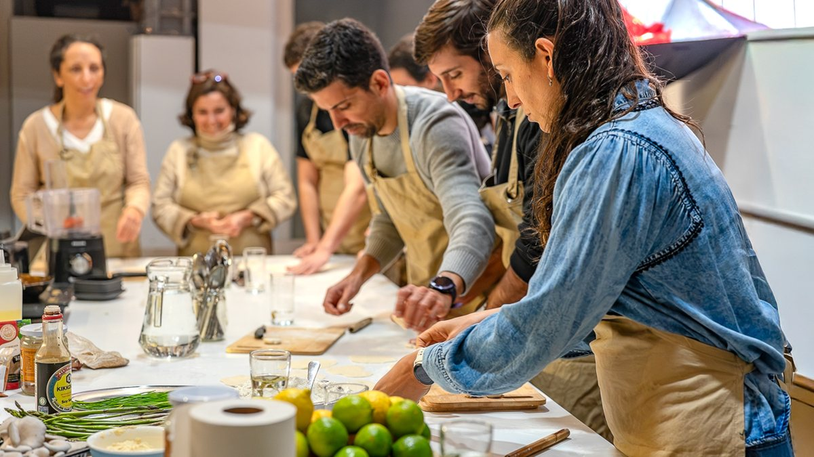
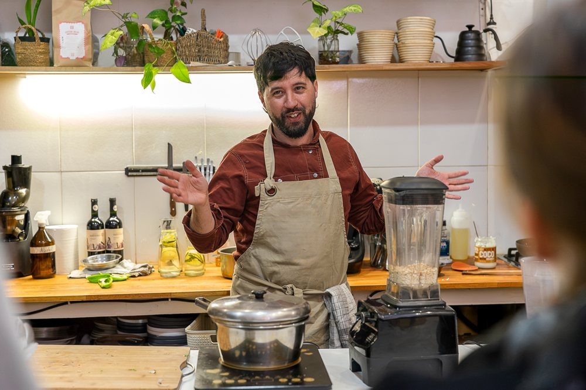
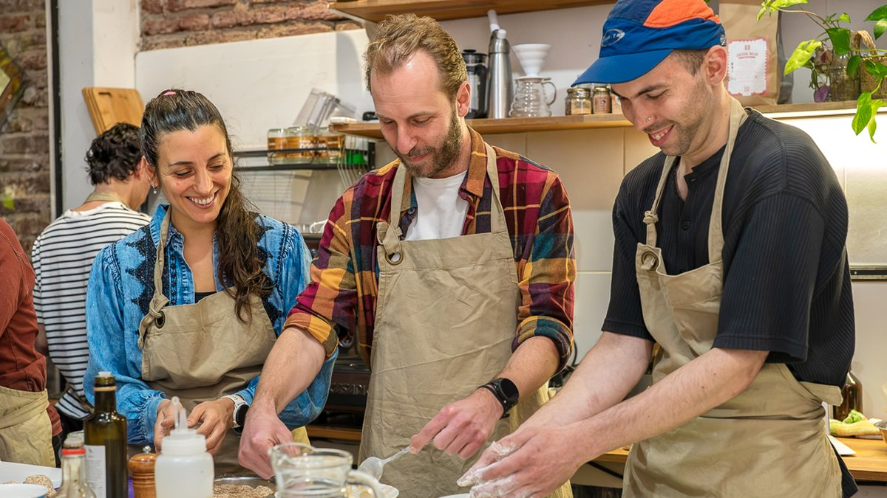

Cena y Taller de Tapeo
Una mesa que se arma entre desconocidos y a las tres horas ya no lo son tanto.
Aprendés técnicas claras y repetibles para transformar un mismo ingrediente en texturas y sabores distintos, junto a otras personas y en un formato divertido. Al final nos sentamos todos a comer lo que salió, con vino o kombucha.
- Fechaviernes 18 de setiembre
- Hora19:00 a 22:30 h
- LugaresSolo 12 lugares
- Precio$2.600 por persona
La próxima fecha
Todavía no hay fecha abierta. Escribinos y te avisamos cuando abramos la próxima.
Comprás la entrada y ya está: no hay formularios ni esperas. Si preferís, coordinamos por WhatsApp.

- ★ 4,9 de 21 reseñas
- Grupo chico
- Todo incluido
- 100 % vegetal
- Sin saber cocinar
- Se puede regalar
Llegás, cocinás,
y después te sentás a comer.
Te recibimos con un delantal y nos ponemos a cocinar. Trabajamos alrededor de una mesa grande, cada uno con su espacio y sus herramientas. Leonardo va guiando preparación por preparación: qué buscamos, por qué, cómo darte cuenta de que está bien.
Cuando está todo listo armamos la mesa entre todos, servimos, y nos quedamos cenando lo que preparamos. Esa segunda parte es la mitad de la experiencia.

Cómo es la noche.
Cuatro momentos, sin reloj a la vista.
- 1CocinásTe damos un delantal y arrancás con la primera preparación, guiado paso a paso.
- 2CompartísArmamos la mesa entre todos con lo que preparó el grupo.
- 3CenásNos sentamos a comer todo lo que hicimos, sin apuro.
- 4SobremesaLas dos copas de vino o kombucha que entran, sin apuro y sin reloj.
Qué vamos a preparar.
Cuatro cosas que vas a querer repetir en tu casa. Todo vegetal, todo hecho esa misma noche por el grupo.
No. No hace falta que sepas cocinar.
La noche está pensada para que cualquiera pueda participar. Leonardo va guiando cada preparación y nadie queda mirando: si nunca amasaste un pan, esta es una buena primera vez.
Tampoco hace falta ser vegano. La mayoría de quienes vienen no lo son.
Qué está incluido, exactamente.
Esto es lo que pagás, sin letra chica:
- Todos los ingredientesNo traés nada.
- Herramientas y materialesDelantal, tabla, cuchillo y todo el equipamiento del estudio.
- La clase prácticaCocinás vos, guiado paso a paso por Leonardo.
- La cena completaTe sentás a comer todo lo que preparó el grupo.
- Dos copas de vino o kombuchaIncluidas, para acompañar la mesa. La kombucha es de Bendita.

Leonardo Lemes
Chef, docente y fundador de Clorofila
25 años cocinando y 13 enseñando, con más de 1.200 personas formadas en el estudio de Parque Rodó.
Leonardo explica lo que está pasando en la olla mientras pasa: por qué algo se dora, por qué una masa pide más agua, cómo darte cuenta de que ya está. Aun en una noche suelta, salís con preparaciones que podés repetir en tu casa.
Con quién vas a cocinar.
Viene gente sola, parejas, amigas que quieren hacer algo distinto entre semana. Nadie se conoce al principio y para el final la conversación ya va sola.
Si venís solo, cocinás igual en grupo, alrededor de la misma mesa.

Así se ve una noche acá.


★★★★★
«Recomiendo sus clases, son toda una experiencia, te vas con un montón de momentos lindos, y aprendizajes muy útiles y únicos.»Isabella Soumastre, reseña en Google
★★★★★
«Excelente los cursos, gran persona Leo, se nota la pasión por la cocina saludable, tuve el gusto de trabajar con él y es una fuente de conocimientos, hermoso el espacio, uso y recomiendo!»Matías Arrieta, reseña en Google
★★★★★
«Excelente lugar para aprender a cocinar y a comer. Es mucho más que una receta, es aprender a crear tus propias recetas de la mano de los que saben.»Alessandra Nadile, reseña en Google
★★★★★
«No son recetas que seguís como instrucciones — aprendés a pensar. Eso no lo encontré en ningún otro lado.»Valentina Pedreira, curso de 3 meses
Lo que más nos preguntan.
No. La noche está pensada para que cualquiera pueda participar: Leonardo va guiando cada preparación y nadie queda mirando. Podés llegar sin haber cocinado nunca.
Todo lo que cocinamos es 100% vegetal. No hace falta ser vegano ni vegetariano para venir: la mayoría de quienes participan no lo son.
Sí, y es más común de lo que parece. Cocinamos todos alrededor de la misma mesa, así que a los diez minutos ya nadie está solo.
Sí. Podés reservar más de un lugar en la misma reserva: avisanos cuántos son y los sentamos juntos.
Los ingredientes, las herramientas y materiales del estudio, la clase guiada, la cena completa con todo lo que preparaste y dos copas de vino o kombucha.
De 19:00 a 22:30.
En el estudio de Clorofila, Maldonado 1976 esquina Blanes, Parque Rodó, Montevideo.
Sí. Avisanos al reservar y adaptamos las preparaciones. Trabajamos habitualmente sin gluten y sin frutos secos cuando hace falta.
Sí, tenemos gift card. Escribinos por WhatsApp y te la armamos.
Se reserva por WhatsApp: escribinos, te confirmamos el lugar y coordinamos el pago por transferencia, Abitab, RedPagos o MercadoPago.
Nos vemos alrededor
de la mesa.
El grupo es chico y las fechas se cierran cuando se llenan. Si vas a venir, guardate el lugar ahora.
Todavía no hay fecha abierta. Dejanos tu mensaje y sos de los primeros en enterarte cuando abramos la próxima.
También está abierto el Taller de Pastas sin gluten
¿Preferís algo más profundo? El curso de tres meses
¿La querés para tu grupo o tu equipo? Armamos la cena privada
¿Es para regalar? Tenemos gift card
- Fechaviernes 18 de setiembre
- Hora19:00 a 22:30 h
- Precio$2.600 por persona
- LugaresSolo 12 lugares
La próxima fecha
Maldonado 1976 esq. Blanes · Parque Rodó · Cómo llegar